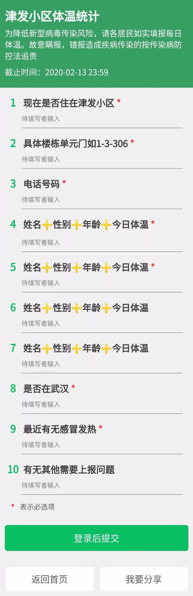

武汉协和医生：我从没穿过这么贵的防护服
原文链接 备份链接 大家好，我是田静。 2003年「非典」期间，柴静采访战斗在一线的医护人员：「你们靠什么防护？」 当时医生的回答是：「我们靠精神防护。」 17年后，又一轮疫情，医疗资源依然紧缺。 我们的武汉姑娘宸宸，这些天都坚持在前线做 …
点击上方蓝字
_
关注我们
_

非常时期，武汉成了全国人民挂念、祈福的城市。封城后，武汉人民的真实生活是什么样？
正和岛自1月26日起特别推出《叶青：我在武汉疫区的第N天》专栏。叶青是一位定居武汉40年的市民，也是一名学者和官员。接下来的一段时间，他会用笔记录下亲身经历的、观察到的武汉，为此他还专门外出到大街上、到超市里，获得一手真实的信息。
这将是一份宝贵的史料。感谢他，我们得以更真切地感知到武汉疫情。让我们一起为武汉加油！
作者：叶青 中南财经政法大学教授、博导
湖北省统计局副局长 正和岛蓝色岛邻
来源：正和岛案例（ID：zhenghedaoanli）
01
天门市病死率5.08%
8日，正月十五。元宵节。晴天。
8日，全国新增确诊病例2656例（湖北2147例），新增重症病例87例（湖北52例），新增死亡病例89例（湖北81例，河南2例，河北、黑龙江、安徽、山东、湖南、广西各1例），新增疑似病例3916例（湖北2067例）。
截至8日，全国确诊病例33738例（其中重症病例6188例），累计治愈出院病例2649例，累计死亡病例811例，累计报告确诊病例37198例。
4日至8日，全国非湖北地区每日新增确诊病例连续5天下降。
比如，7日全国新增确诊病例3399例（湖北2841例）。
8日，湖北省新增病例2147例，其中：武汉市1379例、孝感市123例、黄冈市100例、襄阳市81例。
全省新增死亡81例，其中：武汉市63例、黄冈市7例。
截至8日，湖北省累计报告病例27100例，其中：武汉市14982例、孝感市2436例、黄冈市2141例。
全省累计死亡780例，病死率2.88%，其中：天门市10例、病死率5.08%，武汉市608例、病死率4.06%，鄂州市21例、病死率3.29%。
此为前三名。
02
微信报体温
没有想到，微信在关键时刻还可以起这个作用——报体温。
宅在家里，没有社区的人员上门测体温，因为我们通过微信可以上报。

很方便，很安全。
6日，胡绍担任雷神山医院院长。该院有2个重症医学科病区、3个亚重症病区及27个普通病区。除重症病区外，病房均为2人间，设有一间手术室。
8日晚上8时许收治了第一批患者30名，均入住该院感染一科十六病区。该病区由武汉市第一医院医疗团队负责。与十六病区平行的十五病区，来自省肿瘤医院的医护人员也已进驻。
但是，8日下午武汉大学中南医院接到指示，由该院接管雷神山医院，雷神山医院院长由武汉大学中南医院院长王行环兼任。
武汉大学中南医院8日晚开始进驻雷神山医院，全面接管医院。
根据此前计划，雷神山医院由武汉市卫健委组建专班进行管理。为便于管理，改由武汉大学中南医院整体接管。已进驻医疗团队无需撤出，继续在各自病区展开救治工作。这可以理解。
武汉的另外一家医院传来不好的消息。
8日，《中国新闻周刊》独家获悉，武汉市精神卫生中心出现院内感染。至少有大约50名患者和30名医务人员确诊感染了新冠肺炎。出现聚集性发热。
武汉市精神卫生中心（武汉市心理医院）是湖北省最大的一所三级甲等精神专科医院，现有六角亭、二七两个院区，编制床位950张，职工800余人。
该院医生赵平认为原因有两个，一是医院重视程度不足，二是防护物资和药品未能及时到位。
这真是雪上加霜，病上加病，不幸之上再加不幸。
到超市买菜，人多了容易感染。防不胜防。
有没有更好的办法？
一是社区订菜，定时定量，小区自取。
二是代购。
从8日起，湖北省孝感市孝昌县不允许市民自行到超市采购生活物资，一律由各社区工作人员或小区楼栋长、单元长代购，各商超严格禁止未佩戴红袖章人员进入。
这是有效的办法。在全国可能是第一例。
03
这个坏蛋有名字了
8日，国务院联防联控新闻发布会上发布关于新冠病毒感染的肺炎暂命名的通知，新型冠状病毒感染的肺炎统一称谓为“新型冠状病毒肺炎”，简称“新冠肺炎”，英文名为“Novel coronavirus pneumonia”，简称为“NCP”。
在上海市政府举行的疫情防控新闻发布会上，卫生防疫专家强调，目前可以确定的新型冠状病毒感染的肺炎传播途径主要为：直接传播、气溶胶传播、接触传播。
其中，直接传播是指患者喷嚏、咳嗽、说话的飞沫，呼出的气体近距离直接吸入导致的感染。
气溶胶传播是指飞沫混合在空气中，形成气溶胶，吸入后导致感染。
接触传播是指飞沫沉积在物品表面，接触污染手后，再接触口腔、鼻腔、眼睛等黏膜，导致感染。
因此，专家建议，居家防疫要做到“七个要”：
一要取消一切社会活动聚集
二要常开窗、多通风
三要做好日常家庭消毒
四要讲个人卫生
五要避免空气和接触传播
六要严格做好居家隔离
七要密切关注家庭成员健康状况
我在8日提了一个建议：每个周六上午开展全民义务打扫卫生运动的建议。
新型肺炎给我们最大的教训，就是健康的生活方式，保持良好的生活环境。在环保工作受到重视的情况下，应该无死角地保持生活环境的清洁。
从目前来看，武汉有两大问题值得注意（网民提供）：
一是8日，各个主流媒体都报道了新冠病毒的传播渠道，特别是气溶胶的方式，传播面太广，这比之前大众了解的飞沫传染更广。所以应该马上全城彻底消毒。地面，特别是公厕，并且必须要保证一定的频率。
（好消息是从9日开始，武汉市全城开展一天两次的集中消毒。上午10时、下午4时左右开展消毒，消毒重点范围是：全市医疗机构、集中隔离点、病家、密切接触者家庭、社区、重点单位（含超市、酒店）、集贸市场、公共厕所、垃圾转运站等。）
二是之前媒体也报道过，封城之后在华南海鲜城检验到新冠病毒。海鲜城是突然间被关闭的，很多商户都有大量的存货被封在那个区域里。这里面极有可能还有大量的病毒。从没有看到过相关处理的报道。现在大家都在集中注意力地医治病人，可是这个病毒源头不消除很可怕啊！（不知道真实情况如何）
建议，此次大疫之后，全国每个周六开展全民卫生运动。鼓励公务员和市民，至少一月参加一次。
04
口罩：要消费，还是不要浪费？
8日，我还提了一个建议：公务员不戴N95口罩。
内容如下：
1月31日下午，湖南省长许达哲倡议全省各级领导干部，佩戴一般医用防护口罩，如无特殊必要情况，不佩戴N95口罩，把N95口罩、防护服等医疗物资留给救治一线的医务人员。
2月1日下午，昆明市市长王喜良强调，“其他公务人员一律不准用KN95级别的口罩，把专业的防护设备让给更需要的医护人员”。
2月3日，山东潍坊市疫情防控指挥部公告，各级各部门单位工作人员一律不得佩戴医用N95口罩，将已购买或储存的医用N95口罩全部捐赠给一线医护人员使用。潍坊市疫情防控指挥部要求，如家中备有包装完好、未经使用的医用N95口罩等疫情防控物资的，希望能够积极捐赠给医疗机构。1副医用N95口罩将现场兑换5个普通口罩。
7日，浙江出台指导意见，要求公职人员一般不得佩戴N95口罩，并规范口罩供应管理和分配。
电视上，一些公职人员，包括领导干部，都是佩戴普通医学外科口罩，也是以身作则，并未佩戴N95口罩。优先给一线医务人员、公安、交通、网格化排查人员用。
7日，“吉林发布”称，为了确保N95口罩全部用于一线医护人员使用，吉林省疫情防控工作领导小组已下发通知，要求全省各级党政领导干部、公务员及各类公职人员一律不得购买和使用N95口罩。
此外，黑龙江也倡议用一只N95换5只一次性医用口罩。
8日晚9点，湖北举行新型冠状病毒感染的肺炎疫情防控工作新闻发布会。
发布会透露，湖北将于9日发布医疗物资分配办法。主要包括：制定标准、优化分配、精准调度、多标配用。
新办法将对防疫的高危区和低危区进行界定：高危区除了包括红区（即ICU重症监护病房、隔离病区），还包括检验等特殊岗位、方舱医院集中收治场所。低危区主要指发热门诊和预检分诊。
根据新规定，国家标准医用防护服和医用N95口罩，一律用在红区。非医护机构和人员，不得占用医用防护服和医用N95口罩等紧缺物资。
其实，生产口罩也不是那么容易的事情。
观察者网报道，中国医药集团董事长刘敬桢表示，口罩生产秒速，仅需0.5秒/只，然而一个解析消毒的标准流程，需要7天到半个月。大年初一加班生产的那批次口罩，可能2月8日刚刚上市！
05
“王炸”来了
一开始，我还认为“王炸”是歌星。
“王炸”是斗地主中最大的牌型，有些地方又称为“天炸”，是大王小王一起出。
7日，山东大学齐鲁医院和四川大学华西医院的医疗援助队在武汉天河机场相遇，两队医生护士隔空呼喊“加油”。他们将共同接管武汉大学人民医院东院区。
“南湘雅、北协和、东齐鲁、西华西”曾被新华社称为中国医学教育四家“百年老店”。除了“东齐鲁、西华西”外，“北协和、南湘雅”的多批医疗队也在支援武汉。
武汉是抗疫的主战场，各路高手云集，不到武汉来打拼，来磨砺，更待何时！
不仅有外省医护人员11000多人到武汉，更多的捐赠物资也不能忘记。
截至7日，全国各省市援助的各类医疗物资累计达到1000万件次以上，社会各界捐赠的医疗防护物资也达到了1000万件次以上。
尽管如此，湖北还是不够。
截至7日，湖北全省主要的防护品生产企业复工率达到了百分之百。医用防护服已经达到日产3万件，力争能够尽快达到每天5万件的水平。争取早日超过每天15万到20万口罩生产量的大关。
近日，一天全省医用防护物资最低需求5.94万套，但实际供应也只有4.85万套，还有接近1.1万套的缺口。
06
小结
一个特殊的元宵节。
一个没有现场观众的元宵晚会。
还是来听听钟南山的说法：看拐点最关键的是新增病例，现在看起来新增病例没有明显增高，这是个好事，但并不意味着拐点已经到来。
现在看起来，早发现早隔离开始起效。
隔离，这是最古老的办法。
原文链接 备份链接 大家好，我是田静。 2003年「非典」期间，柴静采访战斗在一线的医护人员：「你们靠什么防护？」 当时医生的回答是：「我们靠精神防护。」 17年后，又一轮疫情，医疗资源依然紧缺。 我们的武汉姑娘宸宸，这些天都坚持在前线做 …
原文链接 备份链接 国内外的口罩都在送往武汉，可武汉医院的不仅缺口罩，甚至即将用完。人民日报在其官微发问：究竟是物资紧缺还是物资分配环节存在问题？ 截止到目前，协和医院收到的物资全部来自企业和个人捐赠。物资直接对接到各地疫情指挥部或是各 …
原文链接 备份链接 摄影记者 | 蔡小川 “女士们先生们，列车已经到达武汉站，请您按照先后顺序下车……” 广播响起来的时候，车厢里的气氛陡然升到了最高点。所有人的目光都转向了车窗外夜幕之下黑压压的城市。一个列车员从车厢一头飞奔过来。“前面 …
原文链接 备份链接 《人物》记者向多位寻求捐赠的医护人员咨询，他们均表示，很多医院的医用外科口罩库存量大概在一个星期左右，「平常有时口罩也戴一天，如果不去视察病房，有的科室没有戴口罩的需求。」用得不多、存量少，脆弱的库存和供应系统很快被疫 …
原文链接 备份链接 17 年前的那场公共卫生危机，未能及时公开疫情成为事后被诟病最多的问题之一，也成为中国疾病防控系统以及政府信息公开等许多方面的重要转折点。 而多年后，越来越多的互联网官方渠道成为了重大事件的定海神针，「官宣」被普遍接 …